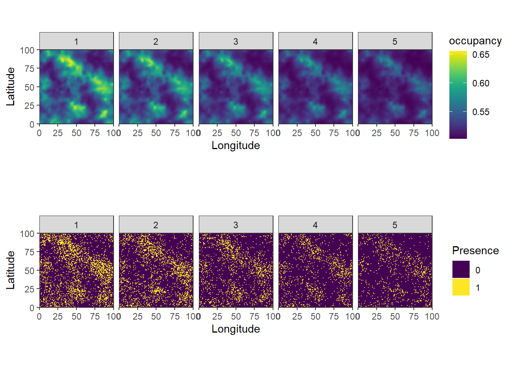
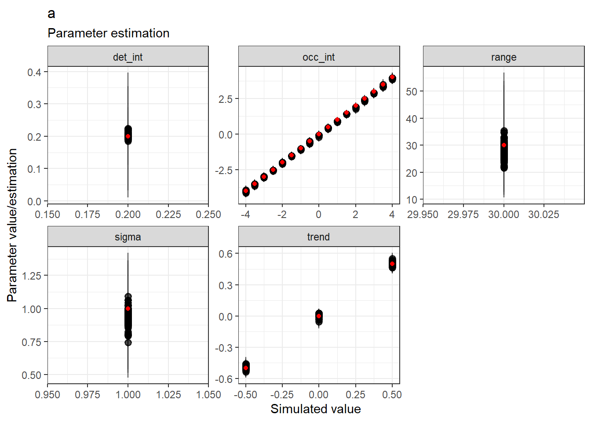
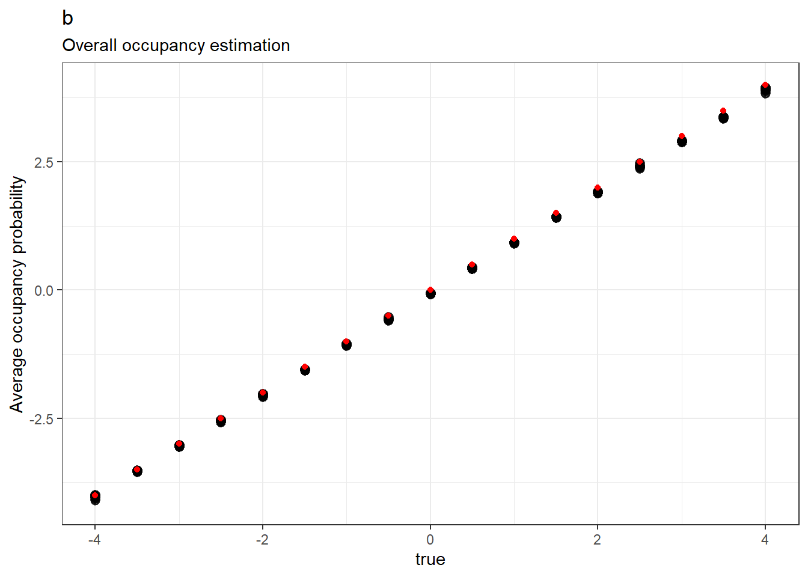
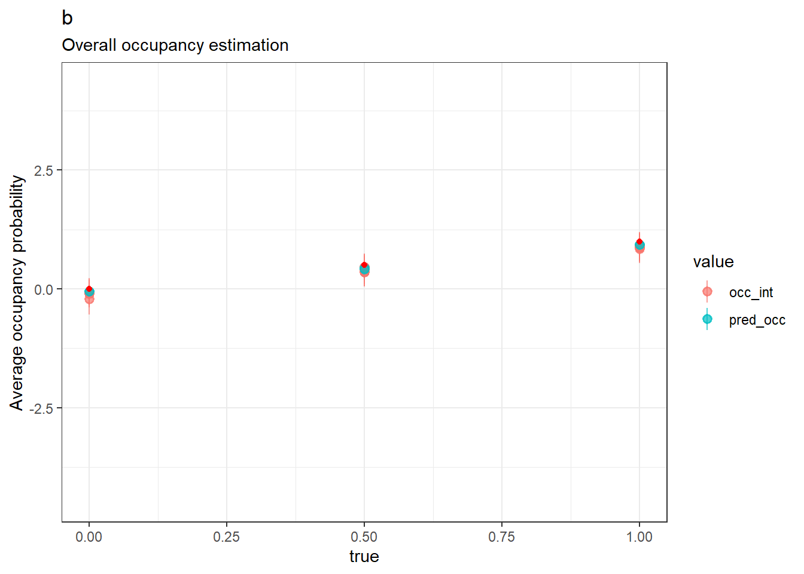

# Load packages
pck <- c("sf","rnaturalearth", "sp",
"here", "spatstat", "gt", "viridis", "viridisLite", "scico", "patchwork",
"tidyverse","data.table","countrycode","CoordinateCleaner","fixr",
"INLA","inlabru","INLAspacetime","broom","matrixStats", "fmesher", "terra", "MASS", "spatstat.geom")
invisible(lapply(pck, require, character.only = TRUE))
# Using latest release of INLA for occupancy functions for INLA
project_folder = here::here()
inla.setOption(inla.call= paste0(project_folder, INLA_PATH))
seed = 42Context
We are using site-occupancy models to analyse large databases of occurences such as GBIF. We wanted to use the very nice implementation of spatial autocorrelation in INLA (Lindgren & Rue 2015)
We use the available vignettes, but we identified a systematic bias when modelling spatial autocorrelation: the estimated spatial field often has a non-null average (uncentered spatial field), which bias the estimate of the intercept. Although the sum of both remain well estimated, this might be a problem in some context. So we would like to advertise that potential problem.
We start by using the simplest occupancy model possible, where \(z_{i,t}\) represents the presence of a species at year \(t\) and site \(i\).
\(z\) depends on the probability of occupancy \(\psi_{i,t}\) through a Bernouilli law: \(z_{i,t} = \mathcal{B}(\psi_{i,t})\). \(\psi\) can depend on other variables through a logit link. Here we investigate several combinations of the following elements: a fixed intercept, a temporal trend and a spatial autocorrelation:
\[\text{logit}(\psi_{i,t}) = \alpha_{0} + \alpha_1 t + \omega_i \]
The second part of the model is the detection part. Our data are detection data, \(y_{i,t,k} = \mathcal{B}(p_{i,t,k} \times z_{i,t})\)
\(p_{i,t,k} = \beta_0\)
Each year, a given proportion of sites are visited. and detection/non-detection data are generated for every visits of these sites. Here we fix it to 100% the proportion of visited sites for every year. When a site is visited in a given year we replicated visits 20 times per year.
# Define the parameters of the dataset
n_years <- 5
n_visit <- 20
n_dataset <- 2
# value of intercepts and coeff in the model
prob_psi <- 0.3
prob_p <- 0.2
trend <- 0.5
# Parameters of spatial field and mesh
range <- 30
sigma_m <- 1
max_edge <- 6We run our simulations on a simple spatial domain.
# Define the spatial domain
nc <- 100 #number of grid cells across latitude
nr <- 100 #number of grid cells across longitude
n_sites <- nc*nr
# Define spatial domain
win <- owin(c(0,100), c(0,100))
Domain <- rast(nrows=nr, ncols=nc,
xmax=win$xrange[2],xmin=win$xrange[1],
ymax = win$yrange[2],ymin=win$yrange[1])
values(Domain) <- 1:ncell(Domain)
names(Domain)="cell_id"
locs <- crds(Domain)
plot(Domain)
We simulate datasets with the parameters fixed above. First, the occupancy is computed on natural scale, then it is tranformed to the probability scale, and binary outcomes are drawn from this probability. The detections are simulated in the same way.
# Simulating datasets
simulate_datasets <- function(n_sites, n_years, n_visit, max_edge, locs, range, sigma_m, prob_psi, prob_p, trend, n_dataset){
# Empty list of dataset
list_dataset <- list()
# Loop to fill the datasets
for (dt in 1:n_dataset){
sites_list <- 1:n_sites # Spatial
years_list <- 1:n_years # Temporal primary
visit_list <- 1:n_visit # Temporal secondary
# Create the autocorrelated field
# Create the mesh
mesh <- fm_mesh_2d_inla(loc.domain=locs,
max.edge = c(1,2)*max_edge,
offset=c(max_edge, max_edge*5),
cutoff = max_edge/5)
spde <- inla.spde2.pcmatern(
mesh = mesh,
prior.range = c(range, 0.5), # Put prior centred on real value
prior.sigma = c(sigma_m, 0.5),
constr = TRUE
)
# Projector matrix
A_sp <- inla.spde.make.A(mesh = mesh,
loc=locs)
# Precision matrix
Q = inla.spde2.precision(spde, theta = c(log(range),
log(sigma_m)))
# Simulate the spatial field
sim_field = inla.qsample(n = 1, Q = Q, seed = seed)
# get the values to the real points
omega <- (A_sp %*% sim_field)[,1]
omega_yearly <- cbind(data.table(omega), replicate(n_years -1,omega))
# Compute table of scale years for trends
years_effect <- array(rep(scale(as.numeric(years_list)), each = length(sites_list)),
dim = c(length(sites_list), length(years_list)))
# EMmpty matrix for z
z <- matrix(nrow = 10000, ncol = n_years)
# Occupancy probabilities
psi <- inla.link.logit(prob_psi + trend*years_effect + omega_yearly, inverse = T)
# True occupancy state
for (i in 1:n_years){
z[,i] <- rbinom(n_sites, size = 1, prob = psi[,i])
}
# Detection probabilities and observed occurrences
# Create empty matrix to store the results
y <- array(NA,dim = c(n_sites, n_years, n_visit))
# loop over visits
for (i in 1:n_years){
for(j in 1:n_visit){
prob <- plogis(prob_p)*z[,i]
y[,i,j] <- rbinom(n = n_sites,size = 1,prob = prob)
}
}
##########################
# Get into INLA format
# Need scale years as a vector
year <- as.vector(years_effect)
# Prepar vector for INLA format
INLA_y <- c()
# Visits table
for(i in 1:n_years){
INLA_y = rbind(INLA_y, y[,i,])
}
# Get which replicates are NA
INLA_y_effort <- INLA_y
INLA_y_effort[!is.na(INLA_y_effort)] <- 1
# Occupancy covariates
INLA_occ <- data.frame(
year_id = rep(years_list, each = n_sites),
ID_grid = as.vector(rep(sites_list, n_years)),
Int_z = 1,
year_scaled = year,
x_grid = rep(locs[,1], n_years),
y_grid = rep(locs[,2], n_years),
spatialfield = NA,
occupancy=unlist(c(inla.link.logit(psi,inverse=TRUE))),
presence=as.vector(z),
true_int = rep(prob_psi, n_years*n_sites),
trend = trend,
idTime = NA)
# Detection covariates
INLA_det <- data.frame(INLA_y_effort[,1])
names(INLA_det) <- paste0(c("DetInt"),"_",1)
for(k in 2:n_visit){
tmp <- data.frame(INLA_y_effort[,k])
names(tmp) <- paste0(c("DetInt"),"_",k)
INLA_det <- cbind(INLA_det, tmp)
}
# Check and remove NAs in observation across visits
keep = !apply(INLA_y,1,function(x)all(is.na(x)))
INLA_y = INLA_y[keep,]
# Keep full for predictions
INLA_occ_pred = INLA_occ
INLA_occ = INLA_occ[keep,]
INLA_det = INLA_det[keep,]
# Assemble the data
INLA_data = as.list(INLA_occ)
INLA_data$Y = INLA_y
INLA_data$X = INLA_det
# Fill list of datasets
list_of_data <- list(INLA_data, INLA_occ_pred)
list_dataset[[dt]] <- list_of_data
}
return(list_dataset)
}We also have a function to analyse the datasets, in which we vary the model according to the type of data we simulated. Priors have been chosen according to recommendations by…
# Different values for occupancy intercept
ptab=expand.grid(psi_vector=seq(-4, 4, 0.5),trend=c(-0.5,0, 0.5))
# Generate three datasets per value
list_dataset <- purrr::map2(ptab$psi_vector,ptab$trend,simulate_datasets,
n_sites = n_sites,
n_years = n_years,
n_visit = n_visit,
range = range,
sigma_m = sigma_m,
max_edge = max_edge,
locs = locs,
prob_p = prob_p,
n_dataset = n_dataset)
#exemple
tab=list_dataset[[5]][[1]][[2]]
pl1=ggplot(data=tab,aes(x=x_grid,y=y_grid,fill=occupancy))+
geom_tile()+facet_wrap(~year_id,ncol=5)+
scale_fill_viridis()+theme_bw()+
theme(panel.grid=element_blank())+
coord_fixed(ratio=1,expand=FALSE)+xlab("Longitude")+ylab("Latitude")
pl2=ggplot(data=tab,aes(x=x_grid,y=y_grid,fill=as.factor(presence)))+
geom_tile()+facet_wrap(~year_id,ncol=5)+
scale_fill_viridis(discrete=TRUE)+theme_bw()+
theme(panel.grid=element_blank())+
coord_fixed(ratio=1,expand=FALSE)+
xlab("Longitude")+ylab("Latitude")+
labs(fill="Presence")
cowplot::plot_grid(pl1,pl2,ncol=1,align="hv")
# Function to analyse the datasets
analyse_dataset_simple <- function(list_of_data, max_edge, range, sigma_m, prob_p, locs){
# Get the data and data for prediction
INLA_data <- list_of_data[[1]]
INLA_pred <- list_of_data[[2]]
# keep true value
true_int <- unique(INLA_data$true_int)
# Create a mesh for the analysis and spde
mesh <- fm_mesh_2d_inla(loc.domain=locs,
max.edge = c(1,2)*max_edge,
offset=c(max_edge, max_edge*5),
cutoff = max_edge/5)
spde <- inla.spde2.pcmatern(
mesh = mesh,
prior.range = c(range, 0.5),
prior.sigma = c(sigma_m, 0.5),
constr = TRUE
)
A_sp_c <- inla.spde.make.A(mesh = mesh,
loc=cbind(INLA_data$x_grid, INLA_data$y_grid))
# Priors
hyper.prior.list.det <- list(beta1 = list(param = c(0,1/2.72),
initial = 0))
hyper.pc.prec <- list(prec = list(prior = "pc.prec",
param = c(1,0.5)))
# defining the model formula
formula <- inla.mdata(Y,X) ~ -1 + Int_z + year_scaled + f(spatialfield, model=spde,A.local = A_sp_c)
func = function(..., mesh_pred, data_pred){
res = (Int_z + year_scaled*data_pred$year_scaled +
(mesh_pred %*% spatialfield)[,1]
)
return(res)
}
model_spat <- inla(formula,
data=INLA_data,
family= 'occupancy',
num.threads = 4,
control.fixed = list(prec = 1/2.72, prec.intercept = 1/2.72),
control.compute = list(waic = TRUE, config = TRUE,
residuals = T,
return.marginals.predictor=TRUE),
control.inla = list(int.strategy = "eb"),
control.family = list(control.link = list(model = "logit"),
link.simple = "logit",
hyper = hyper.prior.list.det))
OccEff <- model_spat$summary.fixed
DetEff <- model_spat$summary.hyperpar
results_occ <- as.data.frame(OccEff)[, c(1,2,3, 5)] %>%
rename(lwr = `0.025quant`, upr = `0.975quant`)
results_occ$value=c("occ_int","trend")
results_occ$true=c(true_int,unique(INLA_pred$trend))
results_random <- as.data.frame(DetEff)[, c(1,2,3, 5)] %>%
rename(lwr = `0.025quant`, upr = `0.975quant`)
results_random$value=c("det_int","range", "sigma")
results_random$true=c(prob_p,range, sigma_m)
A_sp_c_pred <- inla.spde.make.A(mesh = mesh,
loc=cbind(INLA_pred$x_grid, INLA_pred$y_grid))
PostDistSamples <- inla.posterior.sample(250, model_spat) # get coef samples
# Apply function (merge coeff samples w/ new covariates)
PostDist_newCov <- inla.posterior.sample.eval(func, PostDistSamples,
data_pred = INLA_pred, mesh_pred = A_sp_c_pred,
HyperParam.summary = DetEff,
Bern.trial = F, parallel.configs = FALSE)
# Get the mean
vec1=apply(PostDist_newCov,2,mean)
results_pred = data.frame(mean = mean(vec1),
sd = sd(vec1),
lwr= quantile(vec1,prob=0.025),
upr=quantile(vec1,prob=0.975),
true = true_int,
value = "pred_occ")
results <- bind_rows(results_occ, results_random, results_pred)
rm(model_spat, PostDist_newCov, PostDistSamples)
return(results)
}Now we can run the models on our datasets.
all_results <- lapply(unlist(list_dataset, recursive=FALSE), analyse_dataset_simple, max_edge = max_edge, range = range, sigma_m = sigma_m, prob_p = prob_p, locs = locs)
results <- bind_rows(all_results)
parameters <- results %>%
dplyr::filter(value %in% c("occ_int", "trend", "det_int", "range", "sigma"))
pred <- results %>%
dplyr::filter(value == "pred_occ")
int_results <- results %>%
dplyr::filter(value %in% c("occ_int", "pred_occ"))
p1=ggplot(data=parameters,aes(x=true,y=mean))+
geom_pointrange(aes(ymin=lwr,ymax=upr),alpha=0.7)+
geom_point(aes(y=true),color="red")+
ylab("Parameter value/estimation")+
xlab("Simulated value")+
ggtitle("a",subtitle="Parameter estimation")+
facet_wrap(~value,scales="free",labeller=labeller(variable = c(occ_int="Intercept Occupancy",
det_int="Intercept Detection")))+
theme_bw()
p3=ggplot(data=pred,aes(x=true,y=mean))+
geom_pointrange(aes(ymin=lwr,ymax=upr),alpha=0.7)+
geom_point(aes(y=true),color="red")+
ylab("Average occupancy probability")+
ggtitle("b",subtitle="Overall occupancy estimation")+
theme_bw()
p2=ggplot(data=int_results,aes(x=true,y=mean, color = value))+
geom_pointrange(aes(ymin=lwr,ymax=upr),alpha=0.7)+
geom_point(aes(y=true),color="red")+
ylab("Average occupancy probability")+
xlim(0,1)+
ggtitle("b",subtitle="Overall occupancy estimation")+
theme_bw()
p1
p3
p2
rm(all_results, list_dataset)